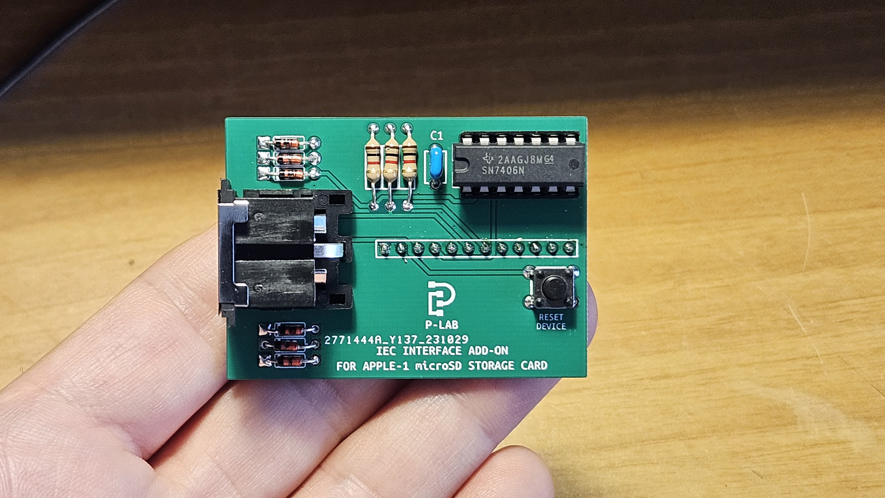

APPLE-1 microSD STORAGE CARD

Documents hosted here:
PROJECT DOCUMENTATION
Current version User's manual [PCB v1.18 / 1.20x]
ITA
|
ENG
Previous versions [PCB v.1.13 / 1.16]
ITA
|
ENG
Briel Computers REPLICA-1 compatibility modifications [all PCB versions]
IEC DISK DRIVE ADD-ON

Link to IEC project page
SOURCE CODE - COMPILED FILES - FILES ARCHIVE
External links:
Official Video [YouTube]
Video compatibility with Replica-1 [YouTube]
VIACLOCK Demo Video [YouTube]
IEC Disk Drive Demo [YouTube]

P-Lab 2020-26